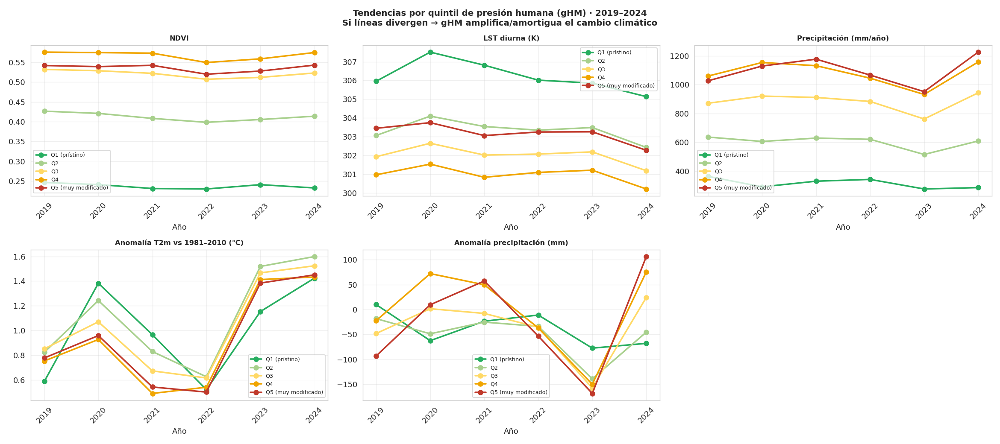
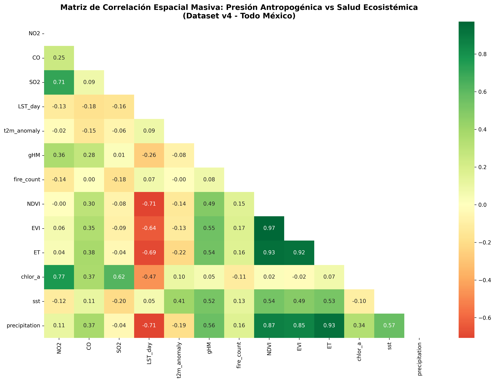
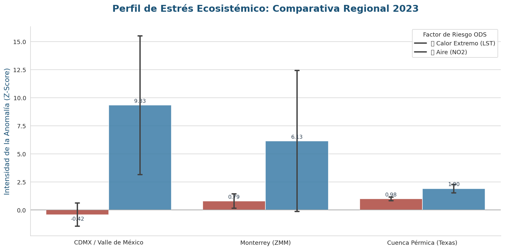
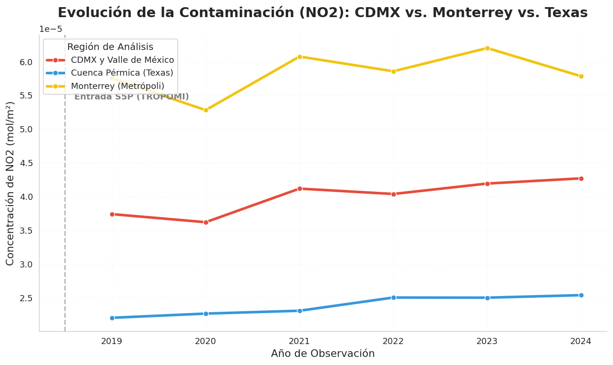
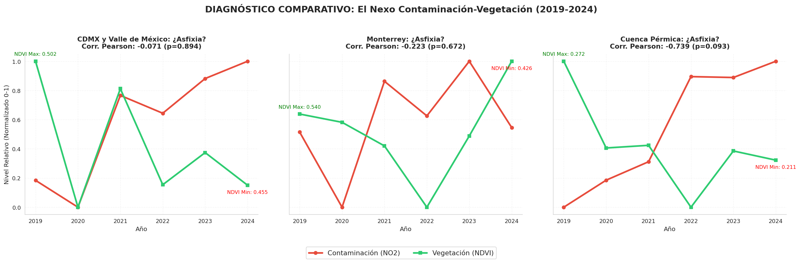

MÓDULO DE INTELIGENCIA ECOSISTÉMICA V4.0
MÉXICO GREENBYTE
Un diagnóstico forense del territorio nacional. No partimos de una hipótesis, partimos de un interrogatorio estadístico a miles de datos satelitales para descubrir dónde y por qué se fractura la resiliencia climática de México.
ODS 13: ACCIÓN CLIMÁTICA
DETECCIÓN AGNÓSTICA DE SESGOS
ANÁLISIS MULTIVARIADO
¿Por qué GreenByte? La mayoría de los proyectos climáticos nacen con una respuesta y buscan datos que la validen. Sin embargo, cuando se trata de tomar conciencia y accion por el clima, no podemos partir de una idea o hipotesis prefabricada, si no que debemos dejar que sean los mismos datos los que nos cuenten el malestar climatico del pais.
La Motivación: Nosotros hemos decidimos que para realmete tomar accion por el clima, antes debemos conocerlo, o bien, entender que personajes actuan en la historia. Por ello, el proposito de GreenByte es hacer un primer escaner del clima Mexicano, integrar y contar lo que el suelo de este país clama, pero muchas veces se ignora.
Interrogamos al territorio como una escena del crimen ambiental. Cruzamos variables atmosféricas (NO₂), biológicas (NDVI) e hidrológicas (Precipitación) para entender no solo si el país cambia, sino de qué forma está fallando la respuesta natural ante el estrés.
Este proyecto tiene naturalmete limitaciones, principalmente relacionadas a la baja cantidad de datos encontrados para este fin, y la estrecha ventana de tiempo que se analizo, sin embargo, el realto que nos cuentan estos datos es suficiente para discernir a grandes razgos como se comporta el clima de Mexico.
Para evitar sesgos, clasificamos el territorio en Quintiles de Huella Humana (gHM). Queríamos saber: ¿Sufre más el bosque virgen o la ciudad industrial?
Lo que encontramos fue una Divergencia Ecosistémica: - En las zonas prístinas (Q1), la naturaleza es honesta: pierde agua y pierde verdor. - En las zonas industriales (Q5), hemos creado “burbujas” que mantienen un verdor artificial mientras la fiebre del suelo sube sin control.

Matriz de Descubrimiento
Aquí es donde comenzó todo. Lanzamos una red de correlaciones sobre millones de datos satelitales. No buscábamos líneas rectas, buscábamos anomalías.
Al filtrar el ruido estadístico, la señal fue clara: México tiene 16 puntos donde el sistema simplemente se rompió. Estos son nuestros sospechosos principales.
La correlación de Spearman confirma que las variables de presión antropogénica y climática están dictando la salud del ecosistema con una confianza estadística superior al 99.9%.
- El Colapso Hídrico: La relación inversa entre LST_day y ET (rho: -0.69) confirma que el aumento de temperatura inhibe la evapotranspiración.
- Eutrofización Costera: La correlación entre NO2 y Clorofila-a (0.77) vincula la actividad industrial con la alteración marina.
- Falso Verdor: El vínculo entre la huella humana (gHM) y el NDVI (0.49) delata paisajes antropizados.

La correlación de rho: 0.77 entre NO2 y Clorofila-a es reveladora. El fitoplancton no consume NO2 directamente, pero este funciona como un marcador de actividad industrial.
Ruta de Impacto:Las zonas con altas emisiones de NO2 coinciden con focos de escorrentía de fertilizantes y aguas residuales. Este nexo confirma que la presión humana altera la productividad primaria, precursora de la hipoxia.
Veredicto:El ecosistema opera bajo un régimen de estrés donde el calor es el verdugo de la disponibilidad de agua.

Para un diagnóstico riguroso, hemos separado la variabilidad natural del fenómeno El Niño/La Niña de la tendencia oceánica real.
Resultados del Modelo Residual:- Confianza Estadística: Con un \(p = 0.02\), hemos logrado detectar una señal climática que el “ruido” natural solía esconder.
- Enfriamiento Subyacente: Tras remover el efecto ONI, la superficie marina muestra un descenso de -0.044°C/año.
- Desequilibrio Térmico: Este hallazgo es crítico; mientras la atmósfera continental se calienta, el océano costero residual se enfría, creando un “choque térmico” que altera los regímenes de viento y transporte de humedad hacia México.
| Año | ONI (Fenómeno) | SST Real (°C) | Residual (Señal Pura) |
|---|---|---|---|
| 2015 | El Niño (Fuerte) | 26.19 | +0.35 |
| 2023 | El Niño (Extremo) | 25.67 | -0.22 |
| Tendencia | – | – | Significativa (p=0.02) |
Selecciona una variable y desliza el año para observar la evolución del estrés climático en México.
Utilizando la estadística espacial Gi* de Getis-Ord, hemos identificado clústeres donde el estrés no es un evento aislado, sino un fenómeno sistémico.
Interpretación de la Simbología:- 🔴 Hotspot (Rojo): Zonas con valores altos de estrés rodeadas de otros valores altos (\(p < 0.01\)). Representan el epicentro del colapso.
- 🟠 Estrés Aislado (Naranja): Puntos individuales que superan el percentil 95 de la muestra nacional.
- Mapa de Calor: Representa la densidad acumulada de presión antrópica y degradación.





El análisis de series temporales revela que México enfrenta un escenario de multi-estrés. Aunque el periodo de 6 años es breve para tendencias climáticas definitivas, la pendiente de Sen permite identificar señales de alerta temprana.
Alertas Críticas:- Pulsos de Calor: La anomalía de temperatura (
t2m) muestra una pendiente positiva de +0.097°C/año, con un pico extremo en 2023 que dispara el estrés hídrico. - Vigor Vegetal en Declive: Tanto el
NDVIcomo elEVIpresentan tendencias negativas, indicando una pérdida de salud fotosintética persistente en el territorio nacional. - Presión Atmosférica: El
NO2es la variable más cercana a la significancia estadística (\(p=0.06\)), confirmando un aumento sistemático en la carga contaminante.
Conclusión: La narrativa de los datos sugiere que el ecosistema mexicano está perdiendo su capacidad de amortiguar eventos extremos. La “fiebre” (calor) debilita la defensa, pero es la “sed” (déficit hídrico acumulado) lo que finalmente causa el colapso.

Este análisis se fundamenta en un flujo de datos de alta resolución, procesado rigurosamente para minimizar sesgos instrumentales y asegurar la reproducibilidad científica (v3).
Fortalezas del Dataset:- Continuidad Atmosférica: El uso exclusivo de Sentinel-5P (TROPOMI) para NO2, SO2 y CO desde 2019 garantiza que las tendencias de contaminación no sean artefactos de un cambio de sensor.
- Sincronía Temporal: La integración del índice ONI al 100% permite correlacionar el estrés hídrico con ciclos globales de El Niño/La Niña con precisión total.
- Control de Errores: Se ha excluido el año 2024 de la variable
loss_anual(detectado como NaN en auditoría) para evitar el sesgo de reporte incompleto del algoritmo de Hansen.
- Eventos Discretos: La menor cobertura en
fire_count(24.2%) yET(32.4%) responde a la naturaleza estocástica de los incendios y a la interferencia de nubosidad en sensores ópticos/térmicos. - Restricción Geográfica: Las variables oceánicas (SST y Clorofila-a) presentan coberturas del ~35-53% debido a que su dominio espacial se limita exclusivamente a las zonas costeras de México.
El estudio abarca una extensión latitudinal desde los 14.49° hasta los 33.80°, cubriendo desde la Selva Maya hasta el Desierto de Sonora. Esta cobertura total permite identificar el avance del estrés térmico en diversos biomas mexicanos.
| Dimensión | Fuente Principal | Período |
|---|---|---|
| Clima | ERA5-Land (Anomalías T2m) | 2015–2024 |
| Vegetación | MODIS (NDVI / EVI) | 2015–2024 |
| Calidad Aire | Sentinel-5P (TROPOMI) | 2019–2024 |
| Antrópica | Global Human Modification (gHM) | 2019 (Ref) |